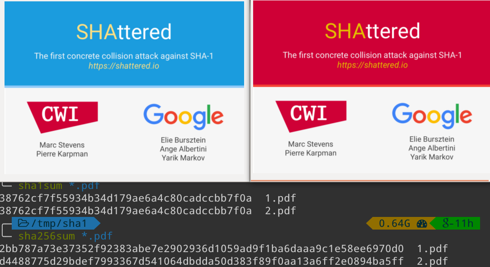

CS3460: Data Structures
Hashing Large Objects
CS3460: Data Structures & Algorithms
Hashing Large Objects
Review
- Hash tables implement a dictionary/set, and support
find(k),insert(k), andremove(k) insert(k)andremove(k)take $O(1)$ amortized time (due to rebalancing)- With universal hashing,
find(k)takes $O(1)$ expected time. - The previous methods focus on storing integers.
- How do we store more complicated data types?
- Typically, pointers to objects.
All Data Types are Arrays
- Any data type can be serialized (represented as a sequence of integers).
- Strings are just sequences of ASCII values.
- Files are just sequences of bytes.
- Multi-dimensional arrays can be "flattened" into one dimension.
- Images are 2D arrays of RGB pixel values.
- Audio is an array of amplitudes sampled from an analog signal.
- Video is a container for images (frames), often with audio.
- So, how do we hash arrays?
Hashing Arrays
- How do we hash an array $A$ to an integer in the range $[0 \dots m-1]$?
- First idea:
h(A[]) = (A[0] + A[1] + A[2] + A[3] + … + A[n-1]) mod m- Very structured - Collisions will happen frequently among "similar" arrays
Polynomial Hash Functions
- What if we instead think of
A[]as the coefficients of a polynomial? h(A[]) = p(x) = (A[0] * xn-1 + A[1] * xn-2 +
… + A[n-2] * x + A[n-1]) mod m- To evaluate
h(A[]), evaluatep(x)at a randomly chosenx. - How do we evaluate this quickly? Horner's rule
int x = 17; // pre-decide a random x
int hash = 0;
for (int i = 0; i < n; i++)
hash = (hash * x + A[i]) % m;
Uses for Hashing
- Consider: By hashing a file down to a small integer "fingerprint", we can:
- Compare (approximately) two files extremely quickly
- Compare files in different locations with minimal communication
- Detect tampering in important files (i.e., checksums)
- Ensure integrity of file transfer by sharing the checksum separately.
What About Collisions?
- Suppose we hash our object to a 128-bit integer using polynomial hashing
- What is the probability two different arrays
A[]andB[]result in the same hash? What is the probabilityh(A[]) == h(B[])? pA(x) = A[0]xn-1 + A[1]xn-2 + … + A[n-2]x + A[n-1]pB(x) = B[0]xn-1 + B[1]xn-2 + … + B[n-2]x + B[n-1]- We get a collision if we choose an
xsuch thatpA(x) == pB(x)mod $m$ - How many unlucky values of
xcan there be?
What About Collisions?

- Two lines (first-degree polynomials) can agree at most at one point
pA(x) = A[0]x + A[1]pB(x) = B[0]x + B[1]- Alternatively, two points uniquely describe a line.
What About Collisions?
- Two quadratics (second-degree polynomials) can agree at most at two points
pA(x) = A[0]x2 + A[1]x + A[2]pB(x) = B[0]x2 + B[1]x + B[2]- Alternatively, three points uniquely describe a quadratic.
- Generally, two $(n-1)$ degree polynomials can only agree in at most $(n-1)$ points, even if we do arithmetic modulo a prime
Collisions are Extremely Rare!
- We get a collision if we choose an
xsuch thatpA(x) == pB(x)mod $m$ - How many unlucky values of
xcan there be? - If $m$ is prime, there are at most $n-1$ values for
xthat will cause a collision. - Given $m \approx 2^{128}$, the probability of choosing a bad
xfrom0...m-1is $n/2^{128}$, which is extremely small even for large arrays
Secret Sharing
- Can I distribute a secret number among $n$ students in class, such that:
- Any one student knows nothing about the secret.
- Any two students can discover the secret.
- Easy solution: Make the secret the y-intercept of a line, give each student one point on the line.
- What if we want to require 3+ students to work together to determine the secret? Use a quadratic.
The Birthday Paradox
- How many people do you need to assemble before there is a reasonable chance (for example, 50%) that two people share a birthday? Only 23
- In general, if there are $n$ "birthdays," the answer is approximately $\sqrt{n}$
- With a hash table of size $n$, we start seeing collisions after $\sqrt{n}$ inserts.
- Example: Estimating the number of fish in a pond.
- Randomly draw fish from a pond. Mark them and throw them back.
- How many fish do we expect to catch before seeing a marked fish? $\sqrt{n}$
- What size does a hash table need to be so that there are unlikely to be any collisions? $n^2$
Hashing in Security
- We can detect tampering in data (a file, a message, etc) if we also store a hash of that data.
- Specifically, if we use a cryptographic hash function (e.g., MD5, SHA1), which is designed to be hard to invert.
- Difficult to change the data while keeping the same hash!
- How many guess do I expect to need to generate a key that collides with another known key (assuming output is a 128-bit integer)? $2^{64}$
- If we store passwords as hashes, instead of "in the clear" (plaintext), can we still log in?
Hashing in Security
Detecting Infinite Loops
- We can use hashing to detect infinite loops in programs; but first, consider the following:
Detecting Infinite Loops
- Goal: Figure out which of the two cases is occurring.
- Restrictions:
- Cannot modify the list.
- Cannot use a "large" amount of extra memory, $o(n)$
- Solution: fast pointer + slow pointer
- Send one pointer at double speed, see if the fast pointer catches up with the slow pointer
Detecting Infinite Loops
- What does this have to do with detecting infinite loops?
- What happens to program memory during an infinite loop?
- We need to identify reoccurring states for our program memory.
- Idea: we can hash the heap to get a fingerprint of our current state.
- Now we are looking for collisions with previous states.